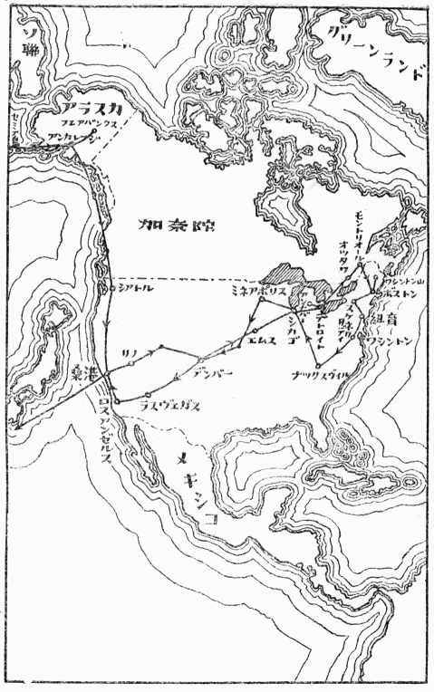

昭和二十四年七月六日に羽田を立って、三カ月の予定で、アラスカ、米本国、カナダを廻って、十月五日に、南方空路経由、羽田へ帰り着いた。その間、わずか九十日の間に、十年前ならば、一年以上もかかるくらいの旅行をして来た。
そういうことが出来たのは、ほとんど全部飛行機を使ったからである。飛行機というものが、ほんとうに実用になったことがよく分った。現在では、東京からアメリカまでの距離が、東京札幌間の距離よりも近くなってしまったのである。
初めはリノのネバダ大学に落着いて、そこで旅程を立てて貰って、二、三カ所廻って来るくらいの
地図で見られるように、ちょいちょいと次の大学へ寄るといっても、たいていは東京から札幌までくらいの距離である。しかしそれが現在の飛行機だと、二時間半くらいのものである。それで例えば、札幌の大学に夕方四時までいて、ホテルへ帰って夕食をすませ、六時に飛行場へ行くと、八時半にはもう東京に着いている。ホテルへ行って、風呂にはいって少し仕事をして寝ると、翌朝はもう八時から東京の大学へ顔を出すことが出来る。旅行の時間というものをほとんど旅程の中に入れなくてもいい。疲労の点も汽車と較べれば、全然問題にならない。
ちょっと面白い話は、ＴＶＡを見るために、ナックスヴィルへ行くというちょっと前に、ミネアポリスのミネソタ大学から手紙が来た。ここの大学で雪の綜合研究所を作ることになって、今準備をしている、君がアメリカへ来ていることを最近知ったので、帰る前にちょっと寄って貰いたい、相談したいことがあるからという意味のことが書いてあった。私は初めナックスヴィルから、ラスヴェガスへ飛んで、ボルダー・ダムを見て帰るつもりだったが、その手紙を見て、ちょうどいい機会だから、ミネアポリスへもちょっと寄ってみようという気になった。それですぐ承諾の返事を出した。

そのこと自身は、別に興味のあることではないであろうが、この地図で、ナックスヴィルからミネアポリスまでの距離を、日本に翻訳してみると、この話の面白味が分るであろう。それは「鹿児島へ来たのなら、ちょうどいい都合だから、ちょっと札幌へ寄ってくれ」という話である。そしてアメリカに行っていると、私自身も、簡単に「それでは」という気になるのである。速度は距離観を変える。そして距離観のちがいは、世界観のちがいになる。戦争に敗けて一番損をしたことは、日本人の世界観がかわってしまったことである。その点は、知っておいてよいことである。知ってもどうにもならないかもしれないが、知らないよりはいいであろう。少くも議会の乱闘病の治療くらいには役に立つであろう。
アメリカ人の能率は、その世界観から来る。そしてその世界観は、科学と技術とによって、時間と空間とをある程度まで征服したために生まれたものである。それでアメリカに行っていると、私なども、いつの間にか、その高度の意味での能率生活の中に溶け込まされてしまう。その一つの実例として、附録に今度の旅行の実施旅程を附けておいた。ひょっとすると、今後訪米される方に、何かの参考になるかもしれない。
三カ月の間に二十カ所以上も廻る旅行をして、日本へ帰ってから考えてみると、ずいぶんまめに廻ったものと自分ながら少し
この本の大部分は、この旅行中、暇をみては書いたものである。そういう意味では、かなり余裕のある旅行だったということも出来るであろう。